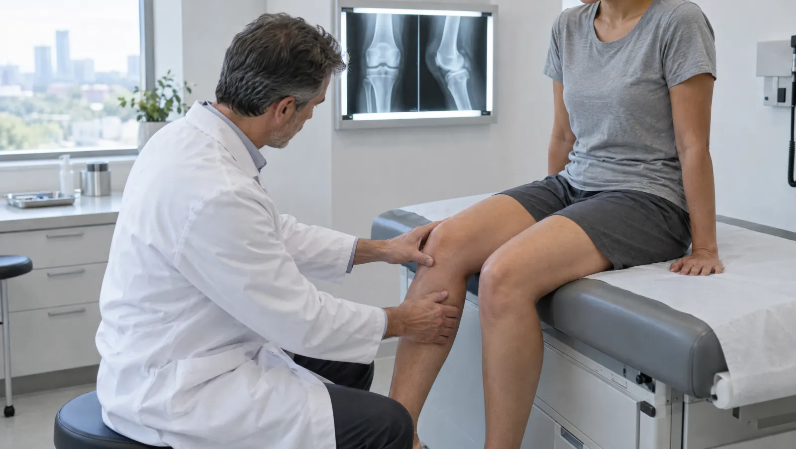

Ortopedide tedavi ameliyatla mı başlar?
Çoğu zaman hayır. Ortopedi; kemik, eklem, kas ve bağlardaki sorunları egzersizden ameliyata uzanan seçeneklerle tedavi eder. Başvuruların büyük kısmı dinlenme, atel, egzersiz programı ve fizik tedaviyle geriler. Travmatoloji ise kırık, çıkık ve yumuşak doku yaralanmalarına odaklanır; burada da pek çok kırık alçıyla iyileşir.
Muayenede ağrının nerede başladığını, hangi hareketle arttığını ve sizi geceleri uyandırıp uyandırmadığını konuşuruz. Eklemin hareket açıklığını ve kas gücünü elle değerlendiririz. Kemik yapısını görmek için röntgen çoğu zaman ilk adımdır. Bağ, kıkırdak ve menisküs gibi yumuşak dokular içinse ultrason ya da MR gerekebilir.
Kırık şüphesinde ilk iş bölgeyi hareketsiz tutmaktır. Acil servisteki değerlendirmeden sonra hekim kayan kırığı elle düzeltir, ardından alçı ya da atel uygular. Parçalı ya da eklemi ilgilendiren kırıklarda plak, vida veya çivi ile ameliyat gerekebilir. Kontrol röntgenleri, kemiğin doğru pozisyonda kaynayıp kaynamadığını gösterir.

Dizde kilitlenme, omuzda kısıtlılık: ne zaman ortopedi?
- Birkaç haftadır geçmeyen diz, omuz ya da kalça ağrısı
- Merdiven inerken ya da çömelirken dizde kilitlenme, boşalma hissi
- Kolu başın üzerine kaldırmakta zorlanma
- Kireçlenme nedeniyle giderek kısalan yürüme mesafesi
- Burkulmadan sonra günlerce süren şişlik ve basamama
- Spor sırasında dizde bir kopma sesiyle başlayan ağrı ve şişlik
- Çocuklarda topallama, bacak eğriliği ya da ayak şekil bozukluğu
- Hafif bir düşmeden sonra oluşan kırık, kemik erimesi şüphesi
Acil durumda beklemeyin
Kemiğin deriyi deldiği açık kırık, şekli belirgin bozulmuş kol ya da bacak, yaralanma bölgesinin altında uyuşma veya morarma acil durumdur. Düşme sonrası boyun ya da sırt ağrısında omurga yaralanması olabilir; yaralıyı kımıldatmadan 112'yi arayın. Diğer durumlarda bölgeyi sabitleyip acil servise gelin.
Kemik, eklem ve yumuşak doku sorunları
- Kırık ve çıkıklar
- Diz ve kalça kireçlenmesi
- Menisküs yırtıkları
- Ön çapraz bağ yaralanmaları
- Omuz sıkışma sendromu ve rotator manşet yırtığı
- Donuk omuz
- Tenisçi dirseği
- Tetik parmak
- Topuk dikeni ve plantar fasiit
- Ayak bileği burkulmaları
- Halluks valgus (başparmak çıkıntısı)
- Kemik erimesine bağlı kırıklar
Röntgenden protez ameliyatına tedavi basamakları
Röntgen
Kırık, çıkık ve kireçlenmeyi gösteren ilk görüntüleme. Gerekirse farklı açılardan ya da karşı taraftaki eklemle karşılaştırmalı çekilir.
- Süre
- Birkaç dakika
- Hazırlık
- Metal takı ve aksesuarları çıkarın
Alçı ve atel
Kırık ya da ciddi burkulmada bölgeyi sabitler. Alçıda kalma süresi kırığın yerine ve yaşınıza göre değişir; kontrol röntgeni bu süreyi belirler.
Eklem içi enjeksiyon
Kireçlenme ya da iltihaplı eklem ağrısında hekimin uygun gördüğü ilaç eklem boşluğuna verilir. Gerektiğinde ultrason eşliğinde yapılır.
Kırık ameliyatı
Kayan ya da parçalı kırıklarda kemik parçaları yerine oturtulur ve plak, vida veya çiviyle sabitlenir. Böylece erken hareket mümkün olur.
- Hazırlık
- Anestezi ön görüşmesi gerekir
Artroskopi
Diz ya da omuz eklemine küçük deliklerden kamerayla girilir. Yırtık menisküs ve bazı bağ sorunları bu yolla onarılabilir.
Eklem protezi
İleri kireçlenmede aşınmış kalça ya da diz eklemi yapay bir eklemle değiştirilir. Yürüme çalışmalarına çoğu zaman ilk günlerde başlanır.
- Hazırlık
- Diş ve diş eti enfeksiyonlarınızı ameliyattan önce tedavi ettirin
Muayeneyi kolaylaştıracak küçük hazırlıklar
- Ağrıyan eklemi kolayca açabileceğiniz bol bir kıyafet giyin
- Önceki röntgen ve MR görüntülerinizi CD ya da dijital bağlantıyla getirin
- Ağrının başladığı tarihi ve tetikleyen hareketi not edin
- Ayak şikâyetinde sık giydiğiniz ayakkabıyı yanınıza alın
- Kullandığınız atel, dizlik ya da tabanlığı muayeneye getirin
Ortopedi ve Travmatoloji hekimleri

Alçı, protez ve menisküs: sık sorulanlar
Alçının içi kaşınırsa ne yapabilirim?
Alçının içine kalem, şiş ya da benzeri bir cisim sokmayın; cildi çizip enfeksiyona yol açabilir. Saç kurutma makinesini soğuk ayarda, alçının kenarından tutmak kaşıntıyı hafifletebilir. Kaşıntıyla birlikte kötü koku, akıntı ya da artan ağrı fark ederseniz kontrole erken gelin.
Kireçlenmede her zaman protez gerekir mi?
Hayır. Erken ve orta evrede kilo kontrolü, kas güçlendirme egzersizleri ve uygun destek ürünleriyle çoğu hasta şikâyetlerini kontrol altında tutabilir. Protez, ağrının günlük yaşamı belirgin biçimde kısıtladığı ve diğer yöntemlerin yetmediği ileri evrede gündeme gelir. Kararı röntgen bulgularınız kadar yaşam kaliteniz de belirler.
Menisküs yırtığı ameliyat olmadan düzelir mi?
Yırtığın yeri ve tipi belirleyicidir. Kan akımı iyi olan dış kenardaki küçük yırtıklar dinlenme ve egzersizle iyileşebilir. Kilitlenme yapan ya da büyük yırtıklarda ise artroskopik onarım gündeme gelebilir.
Burkulmadan sonraki ilk saatlerde ne yapmalıyım?
Eklemi dinlendirin, buz uygulayın ve bacağı kalp seviyesinin üstüne kaldırın. Buzu doğrudan cilde değil, bir beze sararak 15-20 dakika tutun. Basamıyorsanız ya da şişlik hızla artıyorsa kırığı ayırt etmek için röntgen gerekir.
Kırık ameliyatında takılan plaklar çıkarılır mı?
Çoğu zaman çıkarılması gerekmez, vücutta kalabilir. Cilt altında rahatsızlık veren, enfeksiyon gelişen ya da genç hastalardaki bazı plaklar kemik kaynadıktan sonra çıkarılabilir. Kararı kontrol muayenesinde cerrahınızla birlikte verirsiniz.
Bu sayfayı Op. Dr. Emre Gündoğdu gözden geçirdi. Son güncelleme: 7 Ekim 2026.